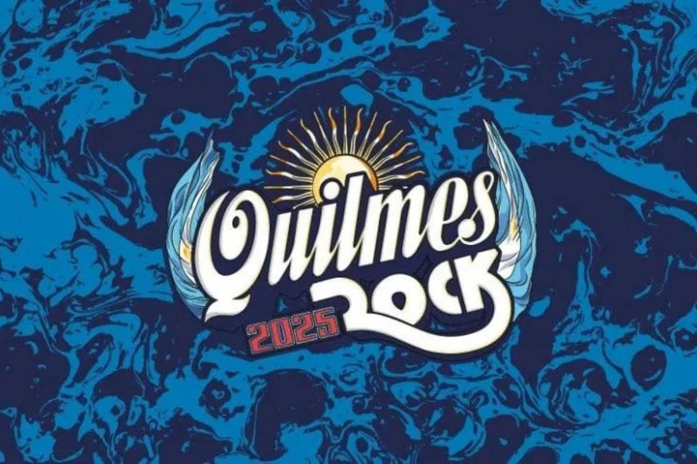

Quilmes rock
Con una edición imponente que reunió a los mayores exponentes del rock argentino, Quilmes Rock reafirmó su liderazgo absoluto en la escena musical argentina. Más de 240.000 almas vibraron en Tecnópolis a lo largo de cuatro jornadas históricas, en un encuentro que rompió todos los récords de convocatoria, agotó entradas en cada fecha y se consolidó como el festival más importante y querido del país. El empoderamiento del rock argentino tuvo su máxima expresión en un festival que fue mucho más que música: fue una celebración colectiva, un ritual cultural, una cita con la historia. A lo largo de dos fines de semana, Tecnópolis se convirtió en el corazón del rock. Cinco escenarios vibrando sin pausa, más de 170 bandas y 500 músicos desplegando su arte, más de 7.000 personas trabajando para hacer posible una maquinaria gigante, y una infraestructura impactante: 35 hectáreas adaptadas, 400 m2 de pantallas LED, 7.000 metros de vallados y 20 activaciones de marca que le dieron vida al festival. Y como si fuera poco, Quilmes Rock 2025 también arrasó en el mundo digital: se estima que más de 3 millones de personas disfrutaron la transmisión vía Flow y Disney+, convirtiéndose en tendencia nacional durante gran parte del mes de abril.
